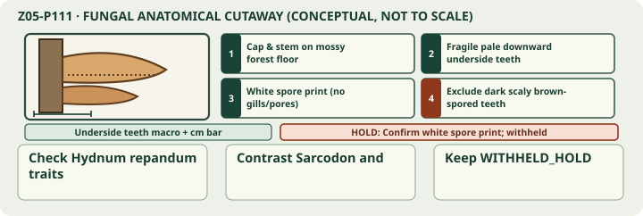

Z05-P111 · Wild foods and poisonous lookalikes · New manuscript
Sweet Tooth / Hedgehog Mushroom (Hydnum repandum & H. umbilicatum)
Document diagnostic traits of Hydnum repandum and Hydnum umbilicatum and contrasting lookalikes under permanent consumption HOLD.
When it applies · Mossy Minnesota conifer and hardwood forest floors; Late Summer-Autumn (Cap-and-stem with fragile pale spines beneath).
Equipment · Mycology key, cm ruler, black-and-white spore card, paper bag.

Actions
- Verify Hydnum repandum and Hydnum umbilicatum (L. and Peck; syn. Wood hedgehog) via Bell Museum Fungarium and MyCoPortal: Pale buff-to-apricot cap-and-stem mushroom growing on forest soil with brittle pale downward-pointing tiny teeth or spines covering the underside instead of gills or pores; white spore print.[B05, B24]
- Exclude lookalikes (Sarcodon and Bankera (tough scaly dark-brown toothed fungi with brown spores), gilled orange woodland mushrooms); reject on: True gills or pores; dark scaly cap with brown spore print; woody bitter flesh.[B05, B24, B06, B08]
- Separate recognition from eating (Verify fragile downward spines and white spore print cleanly; consumption strictly WITHHELD); obey non-SNA and clean-site rules under WITHHELD_HOLD.[B05, B24]
Failure recognition · Single-trait guessing or common names confuse Hydnum repandum and Hydnum umbilicatum with Sarcodon and Bankera, risking poisoning.[B03, B06, B24]
Verify · Binomial, multi-trait key match, lookalike exclusions, season and habitat, and WITHHELD_HOLD status are logged.[B05, B24]
Stop or change course · Stop if any key trait is missing or ambiguous; call Minnesota Poison Control (1-800-222-1222) or 911 on suspected ingestion.[B09, B24]
Evidence and editorial notes
- B03 · USDA NRCS · PLANTS Database: Accepted Taxa and Regional Distribution (Current web edition)
- Section: Accepted botanical nomenclature, authorities, and synonyms · Conditions: Standardizing plant scientific names across regional floras
Support: Tracking accepted Latin binomials, taxonomic authorities, and legacy synonyms prevents dangerous common-name confusion.
Limitations: Common names like hemlock, nightshade, elder, or wild carrot refer to unrelated toxic and non-toxic taxa across regions. · Conflicting evidence: None noted.
Editorial note: Prevents common-name misidentification. · Specialist reviewer: Plant taxonomist
Primary source · checked 2026-11-25 - B05 · MyCoPortal · North American Fungal Voucher Collections Portal (Current web edition)
- Section: Separate fungal voucher collections and microscopic/macro traits · Conditions: Documenting macrofungi across North American collections
Support: Fungal taxonomy requires distinct anatomical schemas (cap, gills/pores/teeth, attachment, ring, volva, spore print, substrate, and often microscopy).
Limitations: Fungal species complexes frequently overlap macroscopically; photos alone cannot confirm edibility. · Conflicting evidence: None noted.
Editorial note: Keeps botanical and fungal schemas separate. · Specialist reviewer: Qualified mycologist
Primary source · checked 2026-11-25 - B06 · CDC MMWR · Notes from the Field: Severe Mushroom Poisoning — Minnesota 2018 (MMWR 68(21))
- Section: Minnesota severe mushroom poisoning outbreak (MMWR 68:21) · Conditions: Wild mushroom foraging and lookalike misidentification in Minnesota
Support: Foragers in Minnesota suffered severe hepatotoxic poisoning after mistaking lethal amatoxin-containing mushrooms for familiar edible species.
Limitations: Delayed gastrointestinal onset (6-24+ hours) followed by a false recovery phase precedes liver failure; treat any wild mushroom ingestion with symptoms as a medical emergency. · Conflicting evidence: None noted.
Editorial note: Critical Minnesota fungal hazard evidence. · Specialist reviewer: Medical toxicologist and mycologist
Primary source · checked 2026-11-25 - B08 · North American Mycological Association · Mushroom Poisoning Syndromes Reference (Current web edition)
- Section: Mushroom poisoning syndrome classes and specimen retention · Conditions: Evaluating suspected wild fungal exposure
Support: Mushroom toxins span distinct syndromes (amatoxins, gyromitrin, orellanine, muscarine, ibotenic acid, GI irritants) with onset from minutes to days.
Limitations: Save remaining uneaten mushroom pieces in a paper bag (not sealed plastic) for mycologist identification if exposure occurs, and call Poison Control immediately. · Conflicting evidence: None noted.
Editorial note: Grounds Z05 fungal toxicology & emergency referral. · Specialist reviewer: Mycology toxicology reviewer
Primary source · checked 2026-11-25 - B09 · Minnesota Poison Control System · Poison Help 1-800-222-1222 and Regional Plant/Mushroom Guidance (Current web edition)
- Section: Minnesota Poison Control 1-800-222-1222 immediate referral · Conditions: Any suspected toxic plant, berry, root, or mushroom ingestion or severe dermal exposure
Support: Call 1-800-222-1222 immediately (or 911 for breathing difficulty, collapse, seizures, or altered alertness); do not wait for delayed symptoms.
Limitations: Never induce vomiting or administer home remedies unless explicitly instructed by Poison Control or EMS. · Conflicting evidence: None noted.
Editorial note: Mandatory Z05 poison-response escalation. · Specialist reviewer: Clinical toxicologist / Poison Center
Primary source · checked 2026-11-25 - B24 · CDC MMWR · Notes from the Field: Severe Mushroom Poisoning — Minnesota 2018 (MMWR 68(21))
- Section: Rejection of folklore edibility tests and AI-only visual clearance · Conditions: All wild plant, berry, root, and fungal screening
Support: Universal skin/lip rub tests, silver-spoon tests, animal-browsing observations, single photos, and generated illustrations never establish edibility.
Limitations: If any diagnostic feature, site-contamination history, or expert review is missing, consumption remains strictly WITHHELD. · Conflicting evidence: None noted.
Editorial note: Enforces Z05 fail-closed edibility rule. · Specialist reviewer: Botanist, mycologist, and clinical toxicologist
Primary source · checked 2026-11-25
Source lineage · New manuscript (Z05 P19-C regional atlas) · Classification · New manuscript.